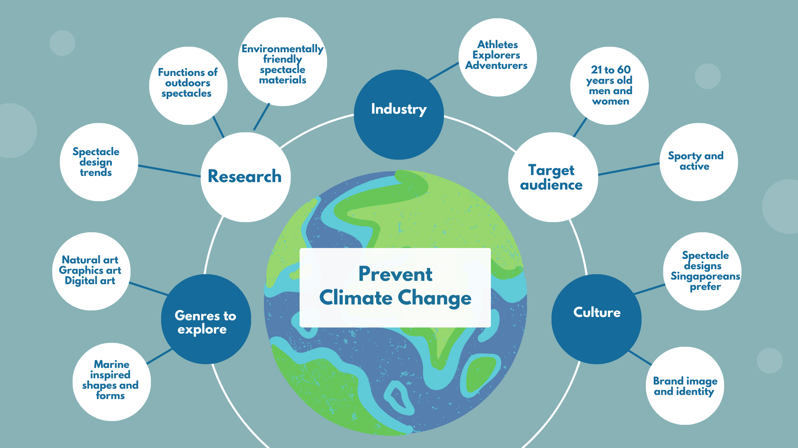
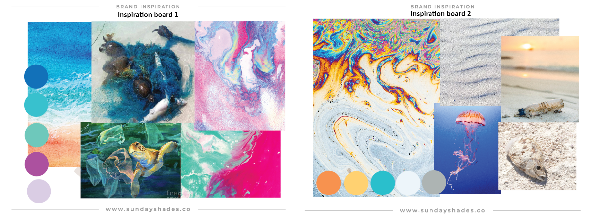
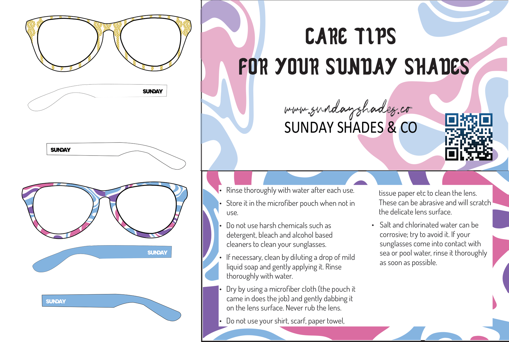
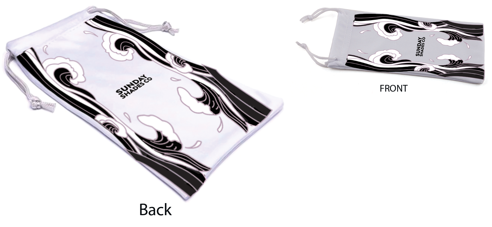

Sunglasses Frame Design
Assignment: we are given the task to design sunglasses frame design for Sunday shades Co. to commemorate World Ocean Day theme. Their target audience are men and women between 21 to 60 years old who are environmentally friendly and loves outdoor activities.
1. Brainstorming and ideating
Above is the mindmap I came up with an exploration of alot of initial ideas.
2. Brand inspiration/moodboards
The concepts I would like to convey is Extinction of animals due to the threat cause by sea pollution which could result in their death caused by for example fishing nets, oil spills etc. Color scheme for moodboard 1 are made up of colors of the sea waves and vibrant colors of the sea that used to be filled with healthy sea creatures. Color scheme of moodboard 2 are made up of more solemn color to commemorate the death of sea creatures due to sea pollution.
3. Draft mockups
Next, I attempted to try out the pattern on a spectacle frame mock up, to see if the 2 pattern works.However, after further analysis of the target audience gender and preference, I feel that the above 2 patterns does not work as they are too feminine and not suitable males.
3. Final product
After doing more in- depth research , I chose to change to waves and turtle shell inspired patterns.Color scheme will be changed to more solemn colors to commemorate the death of the sea creatures as well as to be able accomodate to the age and genders of the target audience.
